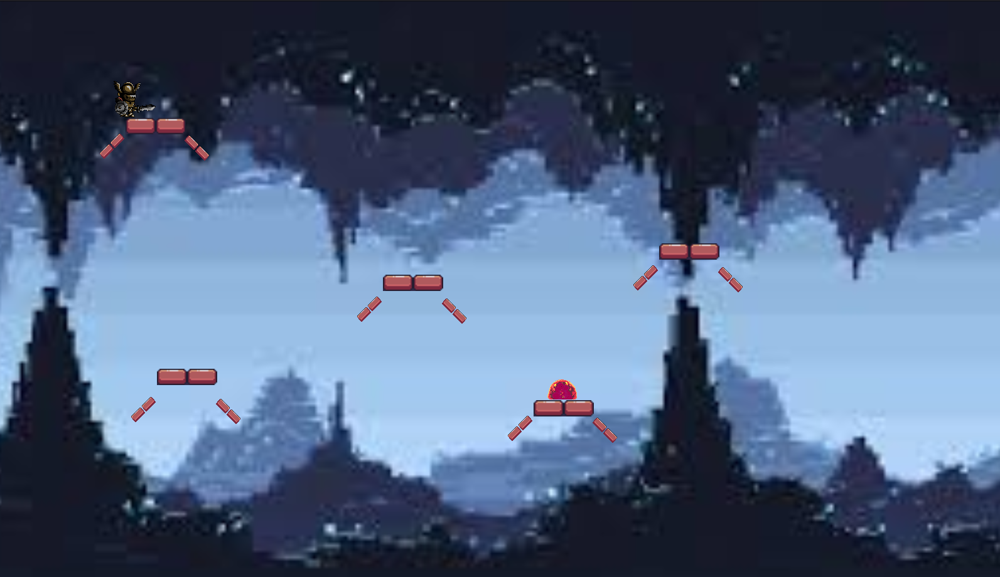

The SEP11 Freedom Project was a year long assignment, where we had to design and make a game using a JavaScript Framework. I chose Phaser, a framework dedicated to making games. There was a lot more freedom this year, as we could make whatever we wanted and we didnt need to include what we had learned during the year since each framework operated differently. My game was about killing slimes.
As mentiioned previously, I used PhaserJS for my project. It is a framework with tons of ways to create a game and that appealed to me. I also saw the finished products online that I really liked so I decided to go with it. I wanted to make a fighting game that was simaliar to Hollow Knight since I was playing it and really liked it. This was very ambitious but I thought I could do it, and it was definitley possible based on the other games I saw in their showcase. I got pretty far with it. I coded the movement, animations and attacks with Phaser's code. However, I encountered quite a few problems along the way.
Phaser was actually a lot more difficult than it appeared. I was given a false sense of confidence from their tutorial, which seemed simple enough. It sort of held your hand through the process, but then you are immediatley pushed into the deep end. The documentation on their website is pretty bad, and isn't explained very well. This led me to searching through old forums in Stack Overflow whenever I would try to code something. On top of that, there almost always seemed to be an error and the messages it gave you only included the line number and behind the scenes effects of the error, never what was actually wrong. Sometimes the screen would also black out so I couldn't have a visual either. When I turned to AI for help, it was almost as useless as the error codes. Half the time it had no idea what it was talking about or I couldn't understand the code it gave me, so I didn't use any of it despite its results.
I remember the biggest challenge I had during this project was making the attack function. There seemed to be multiple ways to do it. A lot of the online ones weren't very clear or they were super complicated. However I eventually got the code to sort of work. I had it in a loop where every time you pressed Z, the system would check for an overlap and then "destroy" the slime. However this would trigger even if I wasnt close to the slime since it kept repeating after I pressed Z. This was fixed by shuffling the code around so that the Z key would be inside the overlap checker. This made it so that everytime there was an overlap, you could press the Z key and the slime would be destroyed. This took a couple weeks to figure out (First few was spent on how to do it, then the last week was trying to get it to work) thanks to Mr. Mueller
